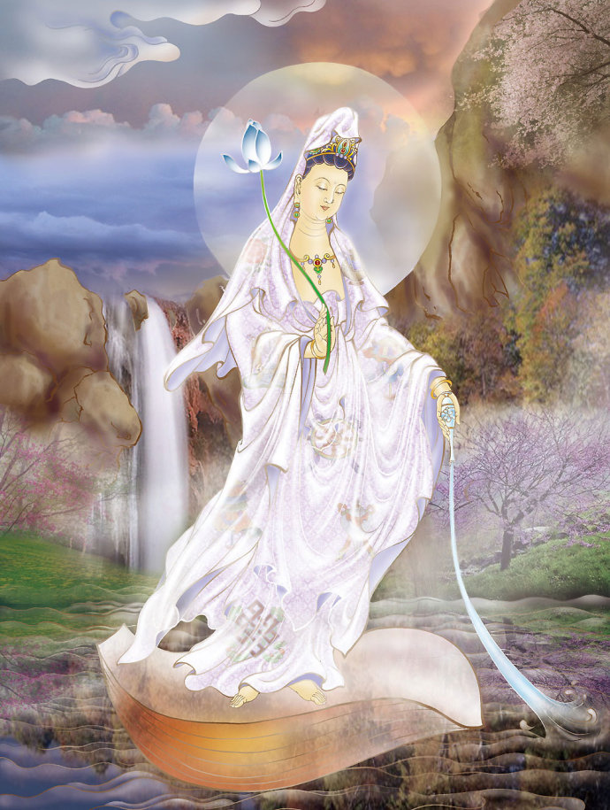
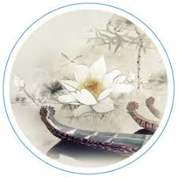

三，觀世音菩薩........心法
真正的觀音法門分行法、心法、功法。其中功法又分為觀法、照法、度法、蘊空法、涅槃法。將上述諸法修成一法，再將一法修空，成人法俱空，即菩提薩埵。最後以般若波羅密多大神咒，得阿耨多羅三藐三菩提，即成等正覺、無上正真，從而進入薄伽梵位。

下面先研討觀音法門行法。
何為行法？
就是修行從何處起步，一步步如何行至深處，述說這個步驟，名之為行法。
大顛曰：從最深處下手！
和尚多嘴了。一千多年前可以，那時沒電視機，現在是電子時代，末法時期，故必須按觀音留下的，專供末法時人行的法去行。
觀音留下的行法是什麼？且聽：從聞、思、修三慧起修。即先行聞、再行思、再行修、共三步。
如何聞？
聞什麼？
如何思？
思什麼？
如何修？
修什麼？
用什麼方法去聞？去思、去修？
方法總的就一個，"觀"。觀什麼？觀見聞、觀思維、觀修心。
觀音曰：從耳根的聞性入手起行，初由聞中，循性逆流，迴光返照，動靜二 相一齊消失。定力日深，能聞的根，與所聞的聲塵，同時俱滅。湛然無邊的境界 現前，進而不生不滅的真心自然顯現。大放光明，無明頓斷。忽然超越世間與出 世間，不受空有等觀念的束縛，證得佛果。
初由聞中，是觀見聞。循性逆流，是觀思維。迴光返照一句以後，均為觀修 心。觀音法門中的“循性逆流”，就是尋源。要“循性”方可“逆流”尋源。循 性就是先找根，沿根去尋源。在修心上，先觀什麼？觀音曰：循性逆流。何為循 性逆流？性即生命本性，即生命光音色能量團；逆流，是指沿著生命光子流向回 觀,去尋找生命之源。源到九天，找到本尊師、找到自己的媽、找到自己的天魂。 然後再“迴光返照”，了知一下當初下來的路，掌握熟悉一下今後回去的路。修 到這一步之後……
初由聞中，即以耳去觀。觀什麼？佛王說了，觀世音為最。即世間的音。世 間的音是什麼？是聞。什麼是聞？新聞。什麼樣的新聞？佛王講了，及末劫沉淪 之音，此為世音。
佛王敲定了：但以此根修！
即末法時期的人，就從這裏修起！這是相較而言，最實際的、最適用的、即是最 圓通的法門。
音是什麼？是不是聲？若是聲，那叫聲塵。但觀音不是從聲塵入手，而是從 音入手。此音若不是聲，是什麼？
音是指映象、現象。眾生所行所為之像。故觀音強調，要以耳根的聞性入 手。初即第一步，由所見所聞之中，觀末劫沉淪之音像。
《心經》的功夫，觀音法門的功夫，完全在於一個“觀”字。若不把這個“觀” 字悟透，則難入觀音之門，《心經》中“觀”之一字，體在“心經”，而用在“易經”。 學者不妨仔細讀《易》風地觀一卦，從中就可悟出觀之一字是如何體用。在第 九篇《日月經》，第七十五集《盥而不薦》一文中，重點講的就是這個“觀”字。 當一人念力強化時，它就印得深一些，念力更強，它就印得更深。這就叫烙 印，不可磨滅的記憶。去除烙印的唯一辦法就是：淡化。是故，觀音曾反復告誡： 在修行中，在行功中，一定要於心無所求！
為什麼貪、佔嚴重影響人上層次？因為有貪心、有佔慾、就會有大量音能量 的消耗和釋放。心一動，就有音能量釋放。一念， 一想，音能量就會大量逸散。 心中一有所求，音能量就求出去了。是故，觀音曰：修煉的關鍵，在於於心無求。 若是真想修出來，就當以日日時時的瑜伽心態，與天心相應。色魂為色心、 音魂為音心、天魂即天心，如此為三心。天有意、人有意、音無意，此為二意。 故知生命的組成是三心兩意。
如此看出漢字之絕妙！意字無心則為音，故知音乃無心意。
而觀音之法，這個觀字配的是無心意，“觀無心意”即觀音。
而有心行觀則不成觀音，是故觀音再三曰，要於心無求，行觀一求心則不成觀音而成為觀意，把觀音法門變成了觀意法門，而所觀之意卻不是天意而皆為人意。音隨色心而變化萬千以成人意圖景。

行观学者，我请那个碧霞元君圣母开示两句啊。她就说：心放平，好好修，机不待时啊！
妙师：嗯，机不待……机不待……机不择时吧？
行观学者：机不待时，还是机不择时？
妙师：机不待时啊！
行观学者：她说机不待时就是机会不是等待的意思。机会来了，不是它等待你的，就是那意思。
妙师：嗯，嗯，机不待失。就是……她意思就是说这个机会一旦错过去了，就没有了。她是这意思。
行观学者：修行人当……当以自身修行为重。关键在于心静。在于你的修为。要想出人头地，就得放下一切，放下自我，放下凡俗中的没用的东西。青天白日，花好月圆。到那时，将展现在人们面前的九天，又是一幅升花的壮举场面。
修行人当抓紧修行的时机。不是要你去怎样，而是你要去怎样。
妙师：嗯，对。意思就是说，是自己的事情。
行观学者：唉，修行也是你自己的事。能不能走，怎么走，怎么上，就在于一个心态。
妙师：嗯，对。
行观学者：心态的平衡点，就是瑜伽心法。
妙师：嗯，对，就是瑜伽心法，无上瑜伽。
行观学者：天地悠悠，过客匆匆，潮起潮落，一批批人来人往，皆是过路客……
| 上 一 頁 | 下 一 頁 | 回 主 頁 |